UBR Lab Tools & Instruments
End-to-end validation platform — automated regression, performance characterization, RF bench testing & customer-ready deliverables for UBR P2MP

Local Jenkins
Runs on BTS Lab PC · executes pytest pipelines against live DUTs · publishes HTML/CSV reports & email
HQ Jenkins
Headquarters instance · stores & distributes firmware release builds · source of FW images for validation

Atlantis — GitLab
Primary code repository · automation framework, profiles, Jenkinsfiles · defect & patch tracking
Kiwi TCMS
Test plans, runs & results · manual + automation status · sign-off exports for release validation
Senao Validation Reports
Pass/fail dashboards, grouped results & build summaries per firmware release
192-point matrix
HT20–HT160 × MCS × DL/UL throughput with spec deviation highlighting
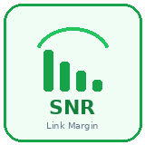
Link margin & SNR
Automated attenuation sweeps plus handheld spectrum for interference & site survey
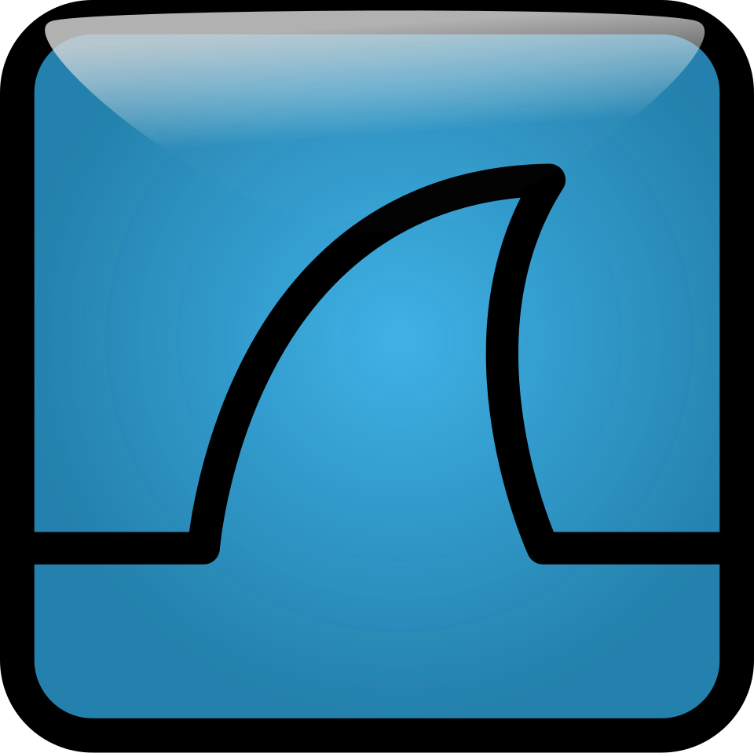
PCAP · traces · logs
Packet captures, Playwright traces & centralized log store via JCAP
Regression + Kiwi
FW upgrade cycles, stability tests & test-plan traceability for customer acceptance
Local JenkinsHQ JenkinsGitLab TRex Server
TRex Server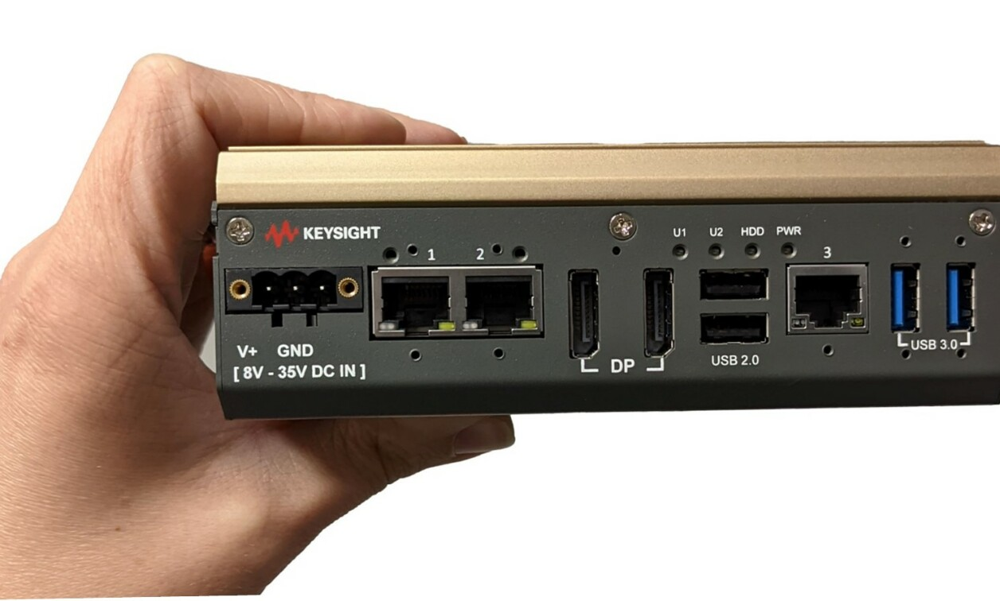
Ixia Novus Mini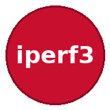
iPerf3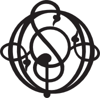
Ostinato Playwright
Playwright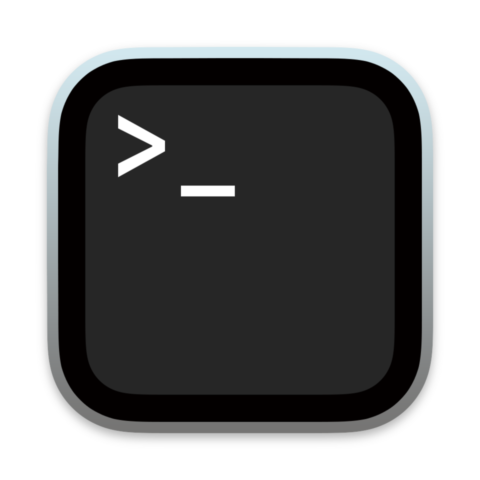
Scrapli SSH Coverage Workbook
Coverage Workbook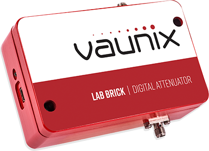
Vaunix LDA-602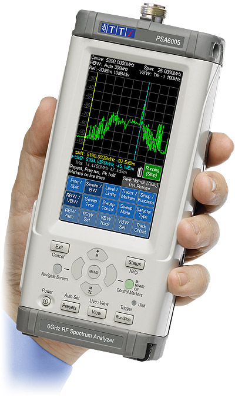
TTI PSA6005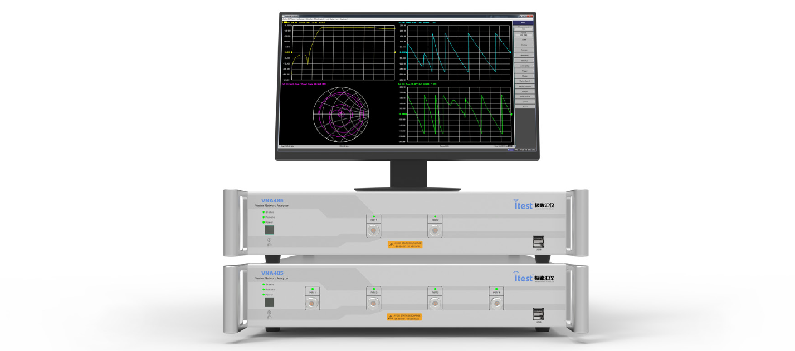
VNA485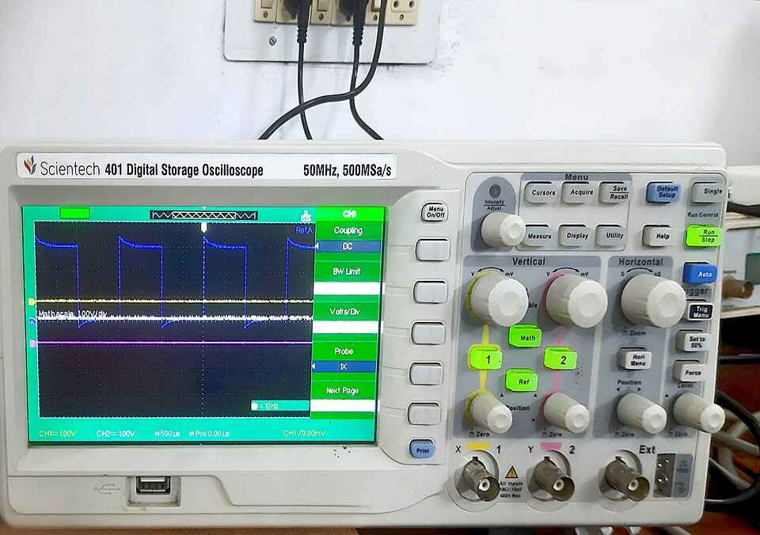
Oscilloscope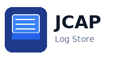
JCAPPlatform & Workflow Tools
Local Jenkins
- AutomationFramework — 110 functional cases (GUI, IP, jumbo)
- Regression — 3 stability cycles (reboot, reload, FW upgrade)
- Throughput — 192-point TRex performance matrix
- Email notification + publishHTML per build
- Archives reports to reports/artifacts/
HQ Jenkins
- Official firmware release builds
- Versioned FW artifacts for validation
- Consumed by lab during regression (REG_03)
- Separate from local test execution Jenkins
Atlantis — GitLab
- Automation framework source (pytest, utils, traffic/)
- profiles/*.yaml — lab topology & device config
- jenkins/ — 3 pipeline definitions + common.groovy
- GitLab issues — raise, track, close defects
- Branch history · merge requests · code review
Kiwi TCMS
- Test plans, suites & case catalog (GUI, IP, throughput)
- Manual & automated execution status
- Run history per firmware build
- Export for release sign-off & stakeholder reports
- Defect linkage with GitLab issues
Traffic & Performance
TRex Server
- 192 combinations — HT20–HT160 × MCS × DL/UL ratios
- SSH control from BTS Lab PC (mgmt NIC)
- Operating-rate cross-check vs throughput spec
- HTML + CSV + JSON per matrix run
- Throughput PNG charts on TRex host
Ixia Novus MiniPro
- RFC 2544 / Y.1564 compliant sessions
- Multi-CPE throughput benchmark
- PDF performance report generation
- Profile-selectable vs TRex backend
iPerf3
- IPv4 & IPv6 bandwidth validation
- BTS ↔ CPE over RF path measurement
- Integrated in functional IP test cases
- Server endpoints defined in YAML profiles
Ostinato
- Multi-protocol custom packet streams
- Edge-case & negative protocol scenarios
- Complements TRex for non-standard frame testing
- Used in functional & stress validation runs
Automation Framework
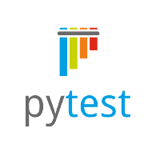
Python 3.10 + Pytest
- 305+ automated cases across 4 categories
- Session bootstrap — VLAN, QinQ, CPE discovery
- Recovery manager — soft recovery, factory reset
- pytest-async · pytest-check soft assertions
- pytest-json-report · pytest-html output
Playwright
- BTS & CPE LuCI web UI validation
- Cross-check GUI vs SSH/UCI backend
- Session traces · screenshots · replay zip
- 110 functional cases include GUI coverage
Scrapli · SSH
- BTS & CPE CLI / UCI validation
- TRex remote control over SSH
- Device logread · config apply · link checks
- Dual lab PC hops (CPE secondary PC)
YAML Profiles
- default · link_formation · factory_provision
- Device IPs, credentials, VLAN/QinQ
- TRex server · attenuator · iperf endpoints
- Live testbed summary JSON export
Reporting & Deliverables
Senao Validation Reports
- Branded HTML dashboard with testbed summary
- Grouped results · filters · drift analysis
- Customer CSV summary per build
- Published via Jenkins publishHTML
Matrix Reports
- 192-combination HTML performance report
- Per-case JSON + CSV in performance_*/ folder
- Red-row spec deviation highlighting
- Tx/Rx rate & link-stats columns per case
Pipeline Email
- Completion email to test owner
- HTML report attached / linked
- Build status · pass/fail summary
Artifacts & Captures
- pytest JSON · PCAP · Playwright trace zip
- testbed_state.json · testbed_summary.json
- Regression_Report.html · Coverage workbook
- Jenkins build artifact archive
Bench Instruments
Vaunix LDA-602
- Programmable attenuation 0–63 dB per chain
- Automated SNR sweeps during lab tests
- Link-margin & sensitivity characterization
- Vendor SDK — libLDAhid.so on automation PC
TTI PSA6005
- Occupied bandwidth & channel power measurement
- Interference detection & adjacent-channel analysis
- Site survey & spectrum analyser test coverage
- Pre/post validation alongside automated RF sweeps
VNA485
- S-parameter & return-loss measurement
- RF chain & antenna characterization
- Pre-validation before automated runs
Oscilloscope
- Electrical waveform & timing inspection
- Clock, pulse & line integrity checks
- Hardware debug during bring-up
Wireshark · tcpdump
- Remote tcpdump on lab PCs via SSH
- Jumbo frame validation (JMB suite)
- PCAP/pcapng archived to reports/artifacts/
- Wireshark for offline decode & analysis
JCAP
- Centralized log & capture storage
- Cross-run search, retention & audit trail
- PCAP, device logs & automation artifacts in one store
- Supports customer evidence requests & defect investigation
Local Jenkins
·
HQ Jenkins
·
Atlantis GitLab
·
Kiwi TCMS
|
Traffic
TRex
·
Ixia
·
iPerf3
·
Ostinato
|
Framework
Pytest
·
Playwright
·
Scrapli
·
YAML
|
Reports
Validation Reports
·
Matrix
·
Email
·
Coverage
|
Bench
Vaunix
·
PSA6005
·
VNA485
·
Oscilloscope
·
Wireshark
·
JCAP